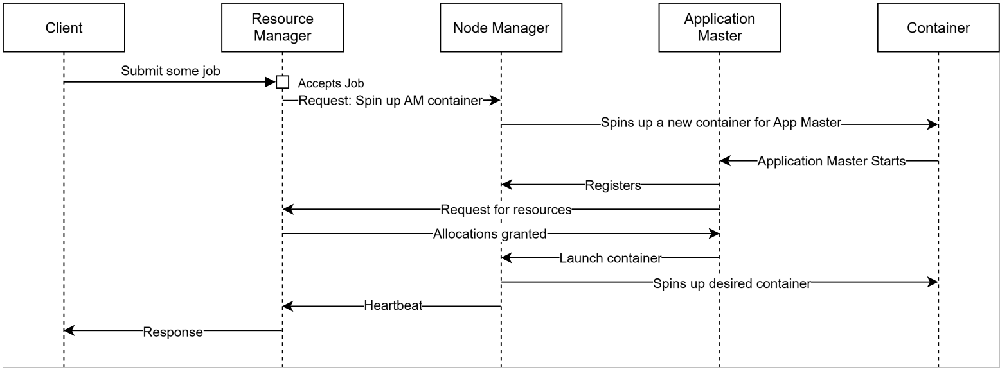
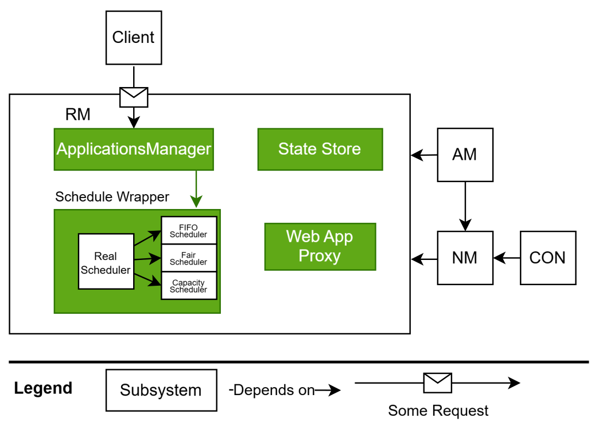
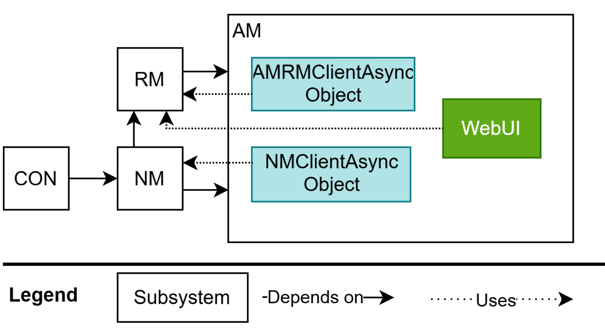

Assignment 1: Conceptual Architecture Report
Abstract
This report provides a conceptual architecture and a deep dive analysis of YARN (Yet Another Resource Negotiator), the resource management and job scheduling framework of Hadoop.
The four main components of Hadoop are Hadoop Common (provides the shared utilities), MapReduce (Enables distributed and parallel processing), HDFS (fault tolerant distributed storage) and Yarn (managers cluster resources and schedules jobs). Their dependencies are structured in a way so that Hadoop Common provides the foundation of libraries and utilities that all other components rely on. The architectural styles within the system are: Layered, Master-Slave, Client-Server, Distributed Fault Tolerance, and Pipe & Filter. Yarn’s main goal is to decouple resource management from data processing which in turn allows for better cluster utilization and supports multiple processing engines. This report uses use cases and sequence diagrams to illustrate YARN’s workflows and interactions with other components, giving a better understanding of Hadoop’s architectural design and operating principles.
Introduction
Within this report we provide a conceptual architecture of Apache Hadoop with a deep dive into Yarn. Our goal was to focus on YARN’s conceptual architecture and dependencies while only using Hadoop’s official documentation and other reputable online sources.
- The four main components of Apache Hadoop are The Common, HDFS, YARN, MapReduce [1].
- The four main components within YARN which were found throughout our research are: Resource Manager, Application Master, NodeManager, and Containers [4][8].
- We use close up diagrams to portray the components interactions and dependencies while using sequence diagrams to create a clear understanding of the systems workflow.
Note: When reading this report please refer to legends found within images: arrows = depends on, dotted line = data / optional / UI.
Hadoop at first glance
Apache Hadoop is composed of four core components (layers) with clear dependencies found within Apache’s public documentation:
- MapReduce: This is Hadoop’s batch processor engine, performs distributed computation on the data stored in HDFS [9]. MapReduce is at the top layer (application layer) and it depends on all 3 lower layers.
- YARN(Yet ANother Resource Negotiator): This is Hadoop’s resource allocator and jobs scheduler. It manages and schedules resources for running applications [8]. YARN is at the 2nd layer (resource management layer) and it depends on the 2 lower layers.
- HDFS(Hadoop’s Distributed File Storage): This is Hadoop’s file storage system [10]. It breaks large data into blocks and stores as well as replicates the blocks across multiple nodes. HDFS is at the 3rd layer (storage layer) and it depends only on the bottom layer.
- Hadoop Common: This is Hadoop common core that provides libraries, services and utilities to support the upper layer Hadoop modules [4]. The Common is at the bottom layer (foundation layer).
Interactions
- The Common <-> HDFS, YARN, MapReduce: Common provides libraries, services, utilities that HDFS, YARN and MapReduce import and use.
- HDFS <-> YARN: YARN stores job-related data such as application JARS, logs and outputs in HDFS. YARN also retrieves application data and configurations from HDFS when launching jobs.
- HDFS <-> MapReduce: MapReduce reads input from HDFS blocks and writes output back to HDFS. HDFS provides data locality information so MapReduce tasks can be executed near the data blocks.
- YARN <-> MapReduce: YARN manages the containers for MapReduce tasks to run on.
Dependencies
- HDFS, YARN and MapReduce depend on Common for core libraries, services and utilities [1]
- YARN depends on HDFS for storing and retrieving application data and configurations (JARs, logs, etc.) [11]
- MapReduce depends on HDFS for accessing input and output data blocks [11]
- MapReduce depends on YARN for resource management and tasks scheduling
Architectural styles and Patterns
| Architectural styles | Description | Hadoop examples |
|---|---|---|
| Layered | System is organized in layers, each providing services to the layer above and using services from the layer below | Hadoop has 4 layers:
|
| Master Slave | One master coordinates multiple slaves that perform the actual work |
|
| Client Server | Client sends a request to server, which processes and returns a response to client | Client sends a request (job submission) to Hadoop Server, Hadoop coordinates the work and sends back a response to client |
| Distributed | Components are spread across multiple physical/virtual nodes that work together as a single system. This improves scalability and fault tolerance | Hadoop consists of multiple nodes where it can store data (HDFS stores file blocks on many DataNodes) and runs computations (YARN schedule tasks across NodeManagers) |
| Pipe & Filter | Data flows through a sequence of processing steps connected by pipes | MapReduce has Map and Reduce filters and Shuffle and Sort pipes: Data input -> Map Filter -> Shuffle Pipe -> Sort Pipe -> Reduce Filter -> Output |
Yarn Overview
YARN (Yet Another Resource Negotiator) is the component responsible for resource management and jobs scheduling in Hadoop. There are 4 key components in YARN: Resource Manager, Application Master, Node Manager and Container.
- Resource Manager (RM): There is only 1 Resource Manager in YARN. It is the master daemon for allocating resources and scheduling jobs. The RM schedules and allocates containers.
- Application Master (AM): There is 1 Application Master per application. It is responsible for managing the full life cycle of its application.The AM requests for containers, and orchestrates the NM to launch and stop
- Node Manager (NM): There is 1 Node Manager per node and an application is typically within containers located in multiple nodes. The NM is responsible for managing its node and the containers within itself
- Container: There are multiple Containers in a node, each runs a task. A container is a resource bundle (CPU, Memory) where a task runs.
Interactions
- Client -> RM: Client submits a ‘job’ to the RM. A ‘job’ is typically an instruction on what to run and the desired resources needed.
- AM <-> RM: AM requests and obtains containers’ information from RM; RM returns an allocation of resources along with a list of NM’s.
- AM <-> NM: AM uses the allocations from the RM and orchestrates the NM’s to launch and monitor the allocated containers
- NM <->Container: NM launches the process in a local container and monitors it.
- NM <-> RM: NM registers itself with the RM, periodically sending heartbeats and status updates of its containers.
Dependencies
- AM depends on RM for allocating an initial AM container for itself and for additional container allocations for the app’s tasks.
- AM depends on the NM to launch, monitor and stop allocated containers.
- NM depends on RM for cluster membership(registration).
- Containers depend on NM for resource limits, status updates, and start/stop rules.
High-Level YARN Workflow
Workflow
- Client submits a job to Resource Manager.
- Resource Manager accepts the job and allocates a container for Application Master of the job application.
- Resource Manager asks the Node Manager of the node containing the allocated container to start it.
- Node Manager launches the container as well as Application Master on it. Node Manager will then send back a heartbeat to the Resource Manager, reporting a change in its containers’ status.
- Application Master registers itself to Resource Manager. After that it requests then retrieves containers’ information from the Resource Manager.
- Application Master sends Node Manager the instructions to launch and assign tasks to those containers.
- Node Manager gets instructions from Application Master, resource from Resource Manager and launches the containers then assigns tasks to them.
- Node Manager sends a heartbeat to Resource Manager to update its containers’ status and Resource Manager sends a response back to the client.
Yarn Conceptual Architecture - Deep Dive
Below we expand on the main components and their responsibilities.
Resource Manager
In Hadoop there exist multiple background Java processes called daemons, they run constantly to manage storage, resource allocation and task coordination across the distributed system, and use the master and slave architecture. The Resource Manager (RM) is a global master daemon, it is the ultimate authority that arbitrates resources, it has two major components: ApplicationsManager and Scheduler, and two minor components: the state store, and Web App Proxy [2]. The ApplicationManager is responsible for accepting job requests from the client(s), negotiating with the first container for executing the application specific ApplicationMaster, requests the allocation of resources from the scheduler, and provides the service for restarting the ApplicationManager container.
The scheduler allocates resources to the various running applications based on the resource requirement of the application. This is also based on the resource Container that has elements such as memory, cpu, disk, network etc. The State Store is a pluggable storage that will save application metadata and also the completion state of the application, since ResourceManager is YARN’s orchestrator it is potentially a single point of failure and State Store is there to store information while ResourceManager restarts. The Web Application Proxy is a proxy intended to reduce web based malicious attacks through YARN, ApplicationMaster has the responsibility to provide a web UI and to send that link to ResourceManager, the proxy will warn users of potentially malicious links and avoid risk [3].
Applications Master
The ApplicationMaster(AM) is the per-application daemon launched by the RM within its own container. The AM acts as the application’s orchestrator by requesting for resource allocations from the RM and by instructing the NodeManagers to start/stop containers.
Within the AM there are two protocols which are used for communication. The AMRMClientAsync is used to communicate with the RM when submitting requests for resource allocations and status updates about the AMs app. The AMNMClientAsync is used to communicate with the NMs when sending start/stop and other container requests. Note that both of the protocols used by the AM contain async within their names, this means that both the RM and NMs send callback messages to the AM.
Many AMs also expose a WebUI per-application. This WebUI is tunneled to the RM, and clients are then able to view per-app status’, metrics, and configs when accessing the RM’s WebUI Proxy.
Node Manager
The NodeManager is the per-node daemon. The NM launches and monitors containers within its machine at the AM’s request. The AM passes along details about allocations the RM had previously confirmed, and the NM executes start/stop instructions to its containers.
The NM does not allocate resources, nor does it orchestrate any real tasks.
The Heartbeat service within the NM sends the RM status updates about the NM. This service runs on NM startup and periodically when the NM is online. Without the heartbeat service, there would be no method to keep track of whether an NM should be included within the cluster. These heartbeat messages also give the RM a chance to tell the NM whether or not to clean up containers and to free up resources.

Container
A Container is a resource bundle where a task runs. A resource bundle includes everything a task may need (CPU, Memory, Network) to run to completion. A common example we can use to create an image is a ‘docker’.
Containers are hosted within nodes, and there are typically multiple containers per node.
Containers come into the equation as early as the AM is allocated a container by the RM. From here, Containers are constantly being spun up and down via the control of its NM; which is at the mercy of its AM.
The Container only hosts the task and has no control over the task. Docker is an example of a resource bundle but a Container can use many other resource bundles.
Deep dive into the Scheduler

The Scheduler is a scheduler, it is responsible for the allocation of resources to various running applications, it is a pure scheduler in that it does not monitor or track the status of the running applications [8]. The Scheduler is designed for better utilization of resources and performance enhancements [12] to maximise these values scheduler has a pluggable policy, this is responsible for partitioning the cluster resources among various queues and applications [8]. The current pluggable schedulers that Hadoop offers are FIFO, Capacity, and Fair schedulers [8].
Deep dive into YARN Federation
YARN Federation is an optional advanced feature built on top of YARN. It was introduced in Hadoop 3.0 to solve very large-scale cluster challenges. Attempting to scale a traditional YARN architecture with a single ResourceManager can run into bottlenecks. As the cluster size grows all resource management and scheduling responsibilities fall on one master node. YARN Federation solves this issue by splitting the system into multiple sub-clusters. Each of these subclusters gets its own ResourceManager and compute nodes. This means there will be many MasterNodes, one for each subcluster. This allows applications to schedule jobs and tasks across all nodes, while each subcluster automatically handles its own local scheduling.
With this design, applications can schedule jobs and tasks across all the nodes in the federated cluster, while each subcluster manages its own local scheduling independently. This architecture is much better for scalability as it enables linear growth: adding more sub-clusters will increase the overall cluster capacity without overloading any ResourceManagers.
YARN Federation improves efficiency as most jobs stay local, and it ensures fairness and load balancing because whenever a ResourceManager in a given subcluster gets overwhelmed, other ResourceManagers can take over some work and prevent any master node from becoming a bottleneck.
At the core of YARN Federation is a StateStore, a local database that keeps track of all subclusters and load-balancing policies. It is used by both Routers and ResourceManagers to coordinate across subclusters.
Clients interact with the federated YARN through a central Router, which serves as the client’s entry point. When a client submits an application, the Router queries the StateSore to check which subcluster should be handling the request. The Router then forwards the request to the ResourceManager of the correct subcluster. That subcluster that starts the job and is called Home Subcluster. Other subclusters that participate in the application’s execution are called Secondary Subclusters.
To facilitate communication between the ApplicationMaster and multiple ResourceManagers across the many subclusters, YARN Federation employs the AMRMProxy. This proxy sits on top of each node and forwards ApplicationMaster’s resource requests to multiple ResourceManagers. The proxy does this by using an interceptor chain pattern - resembling a pipe-and-filter architecture. This allows the requests to be processed through a series of interceptors before reaching their respective ResourceManagers
Yarn Use-Case: MapReduce Job on YARN
If space allows, include sequence diagrams showing client → RM → AM → NM and lifecycle of Map and Reduce tasks inside containers.
Derivation Process & Alternatives
We gathered information from Hadoop official documentation, GeekforGeeks, and DataCamp. Alternatives considered included Google BigQuery (Borg) and Snowflake.
Lessons learned
YARN and Hadoop combine multiple architectural styles to achieve robustness, scalability, and fault tolerance. Single masters (NameNode, ResourceManager) are potential bottlenecks but can be mitigated using standby masters or federation.